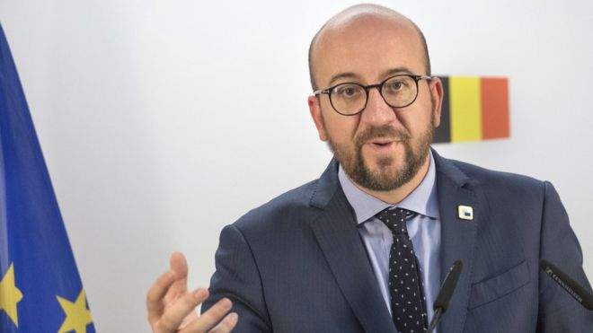
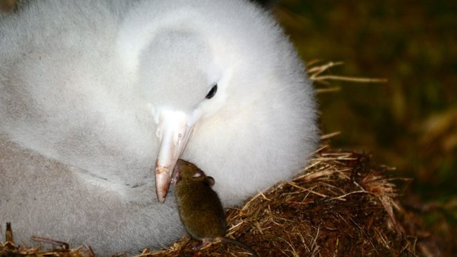
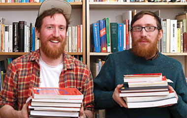
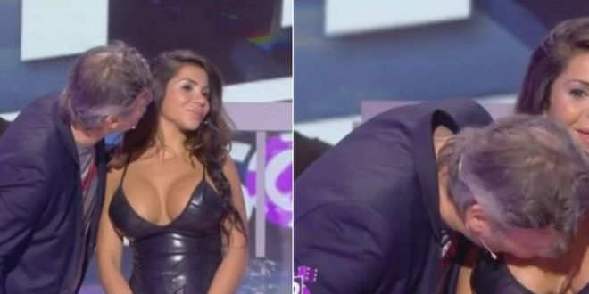

Belgium Walloons block key EU Ceta trade deal with Canada

Belgium cannot sign a key EU trade deal with Canada, Prime Minister Charles Michel says, because of objections from one of its regions, Wallonia.
His statement appeared to dash hopes the Ceta deal could be signed by EU leaders and Canada on Thursday.
"We are not in a position to sign Ceta," Mr Michel said after talks with regional leaders broke down.
It is the EU's most ambitious free trade deal to date but Belgium needs the regions' approval to sign it.
Mr Michel said he had told European Council President Donald Tusk that Belgium could not sign Ceta.
The European Commission had set Belgium a Monday deadline to make its decision on the deal agreed with Canada in 2014, after five years of negotiations.
The giant albatross endangered by monster mice

A remote colony of seabirds is at risk from an unlikely predator - an army of tiny house mice. But one man is making it his mission to drive out the marauding rodents, says Chris Carnegy.
Keith Springer doesn't really do birthdays. That's just as well, because when he turned 55 a few weeks ago he was on a forbidding lump of rock, south of the Roaring Forties. His handful of companions made him a cake, and that was that. I wonder what sort of presents he normally receives. What do you get a guy who's one of the most prolific killers on earth?
Springer carries an air of steely determination. Home is near Christchurch, New Zealand, but he's done his contract-killing in many places around the southern hemisphere. And now he's facing one of the biggest challenges of his life - the monster mice of Gough Island.
We met on a polar research ship called the Agulhas. Six days out of Cape Town it dropped me at the remote British island of Tristan da Cunha, where I do some volunteering for the local government. I saw Keith again on the return leg, by which time he'd sailed further south, and landed on Tristan's sister island.
That ship carried an intoxicating mix of people. In one giant floating coincidence, I found an artist from Holland, an accountant from England, a priest from South Africa, a dentist from Scotland. On the parade went: helicopter pilot, seal-watcher, police officer, maintenance man, diplomat, ornithologist - all alongside islanders heading to or from their homes.
Oh, and there was the Frenchman whose machinery sniffs the Atlantic air for traces of rogue nuclear tests. He does birthdays all right; his party on board featured a cake in the shape of two plump buttocks.
7 Tricks To Learn Any Language In 7 Days

Do you really have to travel to another country to learn the language? The 10-language twins undertook the challenge of learning a language in a week in Berlin, their city of residence. What can we learn from how they learned?
What’s possible in a week? If you dedicated seven days to the achievement of one goal, how ambitious could you make this goal? These were the questions that the multilingual twins Matthew and Michael Youlden posed themselves when they determined to learn Turkish in one week. They would attempt to liberate themselves from the distractions and responsibilities of modern-day life in order to cram eight hours of study time into their daily routine. Here are the seven things that I learned by observing some of the world’s most capable language learners.
1. Get To Know Why
The twins set themselves the challenge of learning a language in a week in order to stretch themselves, and then it was a question of choosing which language to learn. Turkish presented itself as a natural option; there are nigh on 300,000 Turkish speakers in Germany’s capital, and the areas of Kreuzberg and Neukölln are dotted with stores adorned with signs in Turkish. Truly understanding one’s environment in these neighbourhoods requires one to first understand Turkish.
2. Get Sticky
The first operational step in the twins’ learning process was to decorate the entire apartment with sticky notes. This had an almost ceremonial touch to it as the twins delved into dictionaries and proceeded to label everything with its corresponding Turkish name. Within the space of about an hour it was impossible to carry out any menial task, be it making a coffee or flicking off a light switch, without first being presented with at least three different words related to this action.
3. Get A Partner
The importance of the other twin’s presence became immediately apparent as Matthew and Michael delegated responsibilities for rooms to decorate with sticky notes. This simple task was augmented by continuous little tests that they would spring on one another, and the fact that they split up their day slightly differently and studied different topics meant that each twin became a source of knowledge for the other; the question how do you say that again? was met surprisingly often with an answer. The most extraordinary moment came towards the end of the week when the twins simply switched their everyday conversations to Turkish, asking one another if they wanted tea or coffee, were ready to cook dinner or when they were going to leave the house the next day.
4. Prepare Mini-Motivations
Matthew and Michael had numerous micro-challenges throughout the week. On the first day they were visited by a Turkish friend who greeted them in Turkish and complimented them on how quickly they’d picked up their first words and phrases. They then learned the names of fruits and the numbers from one to a billion so that they could visit the Turkish market in Kreuzberg (although they refrained from purchasing nine hundred thousand kumquats). Displaying their haul after their first functional exchange in Turkish, they beamed with pride and a palpable sense of accomplishment before marching back home to study further.
France TV breast kiss puts sex harassment under spotlight

While Donald Trump has bragged in private about making unwanted sexual advances on women, a French commentator has gone a step further by kissing a woman on the breast on live TV.
Jean-Michel Maire found his requests for a kiss rebuffed by a young woman during a re-enactment of the Kim Kardashian robbery in Paris, so he went for her chest instead.
It is the latest in a series of scandals in France that together are prompting a backlash against "seduction a la francaise" - a traditional tolerance for male sexual opportunism, particularly by those in positions of power.
More than 250 outraged viewers - including women's rights minister Laurence Rossignol - complained to the media regulator and others called for Mr Maire to be prosecuted.
Mr Maire said he had watched the episode again backstage and "laughed about it", Marianne reported. He later tweeted a semi-serious apology. The show's host, Cyril Hanouna, said he did not think it was "that serious".
The woman, a 21-year-old dancer called Soraya, told L'Express magazine she had been shocked by Mr Maire's act - "I'm a human being, not just an object," she said.